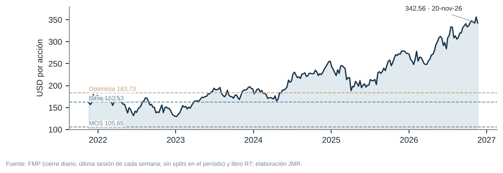
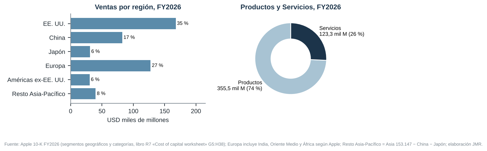
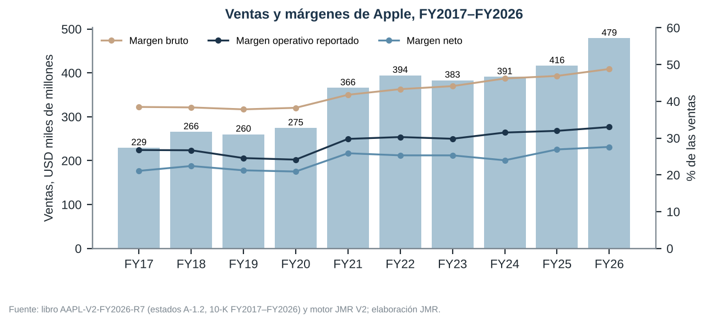
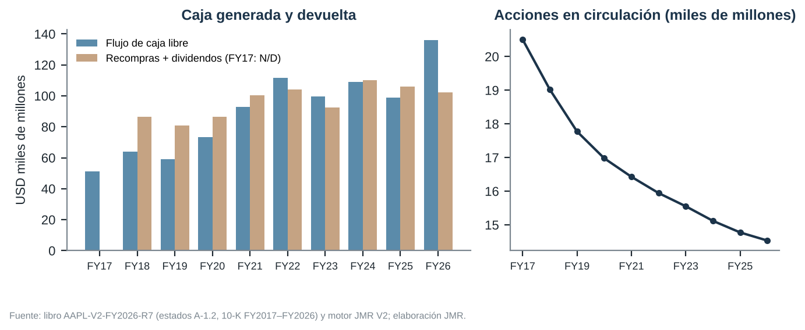
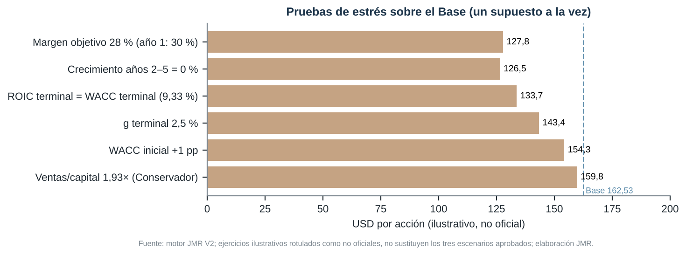
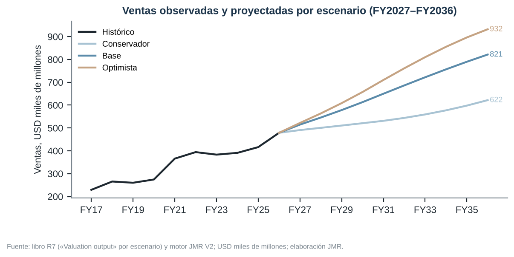
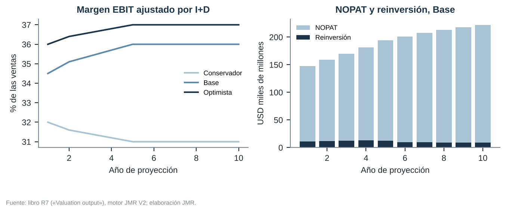
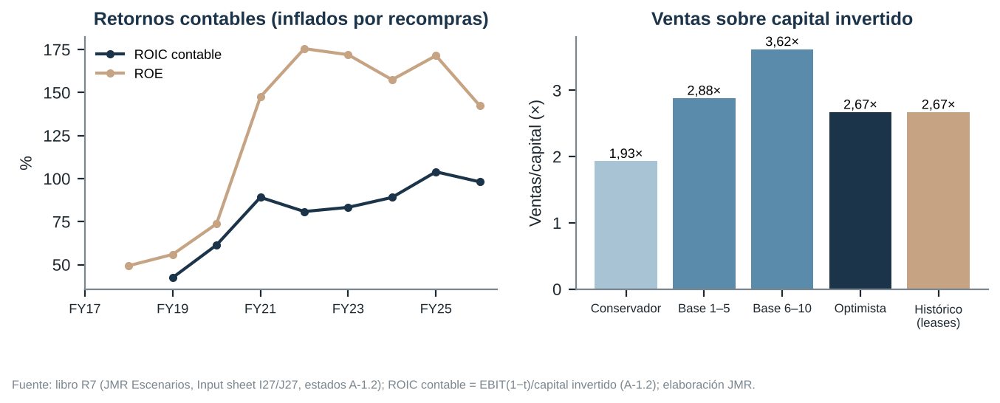
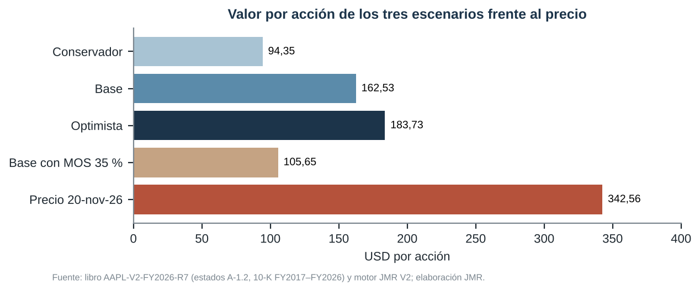
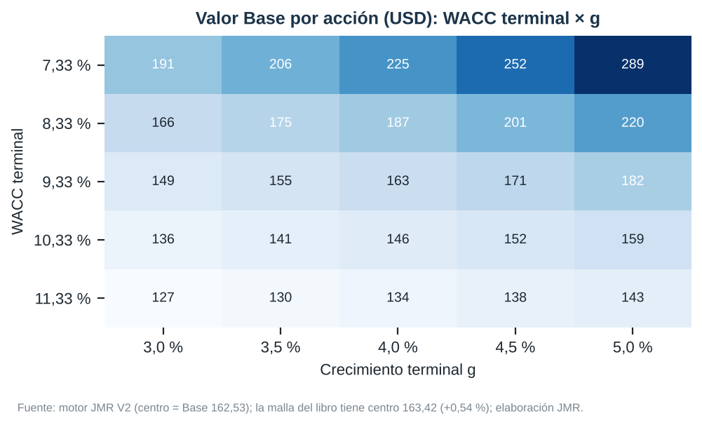

Apple vuelve a crecer 15 %, convierte cada dólar de ventas en más de 28 centavos de caja libre y el mercado la paga a más del doble de su valor aprobado. ¿Cuánto del futuro de Apple ya está en el precio?
Apple es un negocio de calidad excepcional —USD 478.834 M de ventas, USD 136.056 M de flujo de caja libre y Servicios con 76 % de margen bruto—, pero el precio de USD 342,56 supera incluso el escenario Optimista (USD 183,73). La valoración R7, aprobada por el propietario, dice que la calidad no está en discusión; lo que está en discusión es cuánto de una década de crecimiento y de retorno sobre capital nuevo ya pagó el mercado.
Apple Inc. (NASDAQ: AAPL) diseña dispositivos, sistemas operativos y servicios integrados: iPhone (53 % de las ventas), Mac, iPad, Wearables y Servicios (26 % de las ventas y 40 % del margen bruto). Fabrica con socios en Asia y vende sobre todo por canales indirectos. FY2026 cerró el 26-sep-2026 con ventas +15,1 %, EBIT reportado de 33,0 % y caja e inversiones de USD 136.935 M frente a deuda con arrendamientos de USD 94.479 M.

Este documento es un análisis de valoración elaborado con el Modelo JMR V2.0 para uso de su propietario. No constituye asesoría de inversión, recomendación de compra o venta ni oferta de valores. Las cifras provienen de documentos públicos y de proveedores secundarios y pueden contener errores o cambiar. El valor intrínseco es una estimación sujeta a supuestos; los escenarios son historias económicas condicionales, no probabilidades ni garantías.
La revisión AAPL-V2-FY2026-R7 fue aprobada personalmente por el propietario el 23-nov-2026; esa aprobación es una decisión del propietario y no equivale a una auditoría económica independiente, que no existe. El estado técnico lo determinan los controles de la biblioteca: EN_REVISION, con un único control abierto, la falta de auditoría independiente (P02). La deuda de la base suma los arrendamientos operativos según el marco de Damodaran, por excepción autorizada por el propietario. Salvedades aceptadas por el propietario: gasto por intereses FY2026 estimado en USD 2.850 M, conciliación pendiente de arrendamientos/EBIT y de dilución. Corte de estados: FY2026 al 26-sep-2026; precio y tasa libre: 20-nov-2026. Contrato aplicado: JMR V2.0 v1.5.6.
La valoración es la del libro oficial R7 (FCFF Simple Ginsu de Damodaran, fórmulas congeladas desde el 22-nov-2026); este informe no la recalcula: lee sus salidas, las concilia con el motor JMR V2 (diferencia inferior a 10⁻¹² %) y explica sus supuestos. Los estados A-1.2 de diez ejercicios salen del 10-K de cada año. Los tres escenarios (Conservador, Base y Optimista) comparten WACC y g; el margen de seguridad de 35 % se aplica solo al Base. Los múltiplos son diagnóstico y no se promedian con el DCF. Los datos de mercado y macro se rotulan como secundarios; lo que no pudo obtenerse se marca N/D. Los hechos posteriores al corte se describen sin modificar el valor.
¿Cuánto vale una franquicia que gana más de USD 130.000 millones al año, devuelve más de USD 100.000 millones a sus accionistas y necesita poco capital para crecer, cuando el mercado ya la valora en cerca de cinco billones de dólares? La respuesta de este informe separa dos preguntas que suelen mezclarse: la calidad del negocio, que es muy alta y está documentada en diez ejercicios, y el precio, que exige que esa calidad crezca durante una década a un ritmo y con un retorno marginal que ninguno de los tres escenarios aprobados alcanza.
FY2026 combinó tres fuerzas. Primero, un ciclo de renovación del iPhone con modelos Pro que elevó las ventas del teléfono 21 % y empujó a Gran China (+28 %) tras una caída de 4 % el año anterior. Segundo, un margen bruto de 48,8 % (46,9 % en FY2025) por mezcla hacia Servicios y reembolsos de aranceles reconocidos en el costo de ventas. Tercero, un salto de 32 % en I+D (a USD 45.765 M, 9,6 % de las ventas) por infraestructura de inteligencia artificial, que absorbió parte de la mejora de margen. La tasa libre de riesgo a diez años subió de 4,14 % (dic-2025) a 4,92 % (20-nov-2026), con un máximo mensual de 5,13 % en octubre, lo que encareció el descuento justo cuando el precio de la acción casi se duplicó en cinco años.
R7 es la revisión aprobada personalmente por el propietario el 23-nov-2026. Fija el WACC inicial en 11,32 % y el terminal en 9,33 %, el crecimiento terminal en 4 % y las ventas sobre capital del Base en 2,88× (años 1–5) y 3,62× (años 6–10). Las revisiones R2–R6 (Base de USD 196,90 a 196,91) están archivadas como antecedente documental y no son alternativas vigentes. Este informe no recalcula ni reinterpreta la valoración: explica sus supuestos, contrasta sus cifras con la evidencia y deja visibles sus límites, entre ellos el gasto por intereses estimado (capítulo 12 y anexo).
Apple diseña casi la solución completa de sus productos: el hardware, el sistema operativo, numerosas aplicaciones y los servicios relacionados (10-K). Esa integración es su rasgo distintivo y su estrategia: un iPhone no es solo un teléfono sino la puerta de entrada a una tienda de aplicaciones, a una nube, a un sistema de pagos y a un ecosistema de accesorios y otros dispositivos que funcionan mejor entre sí.
El 10-K agrupa la oferta en cinco líneas: iPhone (línea de teléfonos basada en iOS, que hoy incluye iPhone Duo, iPhone 18 Pro, iPhone Air, iPhone 17, iPhone 17e y iPhone 16); Mac (portátiles MacBook Neo, MacBook Air y MacBook Pro, y de escritorio iMac, Mac mini y Mac Studio); iPad; Wearables, Hogar y Accesorios (Apple Watch, AirPods, Beats, Vision Pro, Apple TV, HomePod y HomeView); y Servicios.
Los Servicios son un conjunto heterogéneo: publicidad (que incluye acuerdos de licencia con terceros y las plataformas propias de Apple), AppleCare, servicios en la nube (que ampliarán el acceso a las funciones de inteligencia artificial Apple Intelligence y Siri), contenido digital (App Store, Music, Arcade, Fitness+, News+, TV) y pagos (Apple Card y Apple Pay).

| US$ millones | FY2024 | FY2025 | FY2026 | % FY26 | Crec. FY26 |
|---|---|---|---|---|---|
| iPhone | 201.183 | 209.586 | 254.098 | 53,1 % | +21 % |
| Mac | 29.984 | 33.708 | 37.929 | 7,9 % | +13 % |
| iPad | 26.694 | 28.023 | 27.929 | 5,8 % | 0 % |
| Wearables, Hogar y Accesorios | 37.005 | 35.686 | 35.577 | 7,4 % | 0 % |
| Servicios | 96.169 | 109.158 | 123.301 | 25,8 % | +13 % |
| Total | 391.035 | 416.161 | 478.834 | 100 % | +15 % |
Fuente: 10-K FY2026, Item 7 (ventas netas por categoría).
El mix explica la historia financiera. El iPhone creció 21 % en el año fiscal 2026 «por mayores ventas de modelos Pro» y los Servicios 13 % «por publicidad y servicios en la nube»; el Mac subió 13 % por los portátiles; el iPad y los wearables quedaron planos. En los últimos tres años las ventas de iPad y de Wearables, Hogar y Accesorios no han crecido: el motor son el teléfono y los servicios.
| FY2024 | FY2025 | FY2026 | |
|---|---|---|---|
| Margen bruto de Productos | 37,2 % | 36,8 % | 39,3 % |
| Margen bruto de Servicios | 73,9 % | 75,4 % | 76,2 % |
| Margen bruto total | 46,2 % | 46,9 % | 48,8 % |
| Servicios, % de ventas | 24,6 % | 26,2 % | 25,8 % |
| Servicios, % del margen bruto | 39,3 % | 42,2 % | 40,2 % |
Fuente: 10-K FY2026 (márgenes) y cálculo propio (participaciones).
Los Servicios generan 76,2 % de margen bruto, frente a 39,3 % de los Productos. Con 26 % de las ventas aportan 40 % del margen bruto (US$93.943 millones de US$233.602 millones). Cada punto de mezcla hacia Servicios eleva el margen consolidado, y por eso el margen bruto total ha subido de 46,2 % a 48,8 % en dos años. Pero también es donde se concentran los riesgos regulatorios más serios (comisiones de la tienda de aplicaciones y pagos de Google por búsqueda, secciones 07 y 08).
| US$ millones | FY2024 | FY2025 | FY2026 | Crec. FY26 |
|---|---|---|---|---|
| Américas | 167.045 | 178.353 | 198.083 | +11 % |
| Europa (incl. India, Medio Oriente y África) | 101.328 | 111.032 | 127.604 | +15 % |
| Gran China | 66.952 | 64.377 | 82.378 | +28 % |
| Japón | 25.052 | 28.703 | 30.908 | +8 % |
| Resto de Asia-Pacífico | 30.658 | 33.696 | 39.861 | +18 % |
Fuente: 10-K FY2026, Item 7 (ventas netas por segmento).
Las Américas son 41 % de las ventas; Europa, 27 %; Gran China, 17 %. Esta última cayó 4 % en el año fiscal 2025 y subió 28 % en 2026, impulsada por el iPhone y el Mac y por la fortaleza del renminbi, lo que muestra su sensibilidad a la competencia local, a la moneda y a la política comercial.
Apple vende por canales directos (tiendas minoristas, tienda en línea y fuerza de ventas) e indirectos (operadores de telefonía móvil, mayoristas y revendedores). En 2026, 60 % de las ventas netas pasó por canales indirectos. Los clientes son sobre todo consumidores, pequeñas y medianas empresas, educación, empresas y gobierno.
«Una gran mayoría» de la manufactura la realizan socios externos situados principalmente en China continental, India, Japón, Corea del Sur, Taiwán y Vietnam, además de proveedores en Estados Unidos; el ensamblaje final de «sustancialmente todos» los productos de hardware está en Asia (10-K). Algunos componentes vienen de una sola fuente o de pocas, y los nuevos productos suelen usar componentes a medida disponibles de un único proveedor.
El 10-K es explícito sobre el momento actual: «la empresa experimenta restricciones de suministro y alza de costos por desequilibrios en toda la industria en componentes clave, incluidos semiconductores avanzados, memoria y almacenamiento», y espera que esa tendencia «se intensifique» en memoria y almacenamiento. Al 26-sep-2026 tenía compromisos de compra de manufactura por US$89.700 millones (US$82.700 millones pagaderos en 12 meses) y otros compromisos de compra por US$27.300 millones, además de arrendamientos por US$17.800 millones.
El 10-K señala que Apple compite con otras empresas en el desarrollo y el despliegue de inteligencia artificial y ha invertido «significativamente» en funciones e infraestructura de IA en sus productos y servicios. En el año fiscal 2026 el gasto en I+D subió 32 % (a US$45.765 millones, 10 % de las ventas) por costos de infraestructura, incluidas inversiones en IA, y personal. En el tercer trimestre presentó iOS 27 y «Siri AI». Es una inversión cuyo retorno aún no es visible en los resultados y que pesa en el gasto.
Las ventas de Apple han crecido de forma desigual: lo han hecho de US$229.234 millones en FY2017 (cálculo con el libro) a US$478.834 millones en FY2026, pero con ciclos: un salto en FY2021 (+33 %), una ligera caída en FY2023 (−3 %) y un nuevo impulso en FY2026 (+15 %). La aceleración del año fiscal 2026 es la mayor de la última década y se debe sobre todo al iPhone (+21 %) y a Gran China (+28 %). Que un negocio de este tamaño crezca 15 % es excepcional; que lo repita es la pregunta.

Los resultados trimestrales confirman la tendencia. En el tercer trimestre del año fiscal 2026 (cerrado el 27-jun-2026) las ventas fueron de US$109.417 millones (+16 %), con iPhone +22 %, Mac +29 %, iPad −6 %, wearables +6 % y Servicios +12 %. En los nueve meses sumaron US$364.357 millones (+16 %). Por diferencia con el total anual, el cuarto trimestre (cerrado el 26-sep) habría sumado unos US$114.477 millones, 11,7 % más que un año antes (cálculo propio): la aceleración se moderó en el último trimestre.
En el año, los gastos operativos subieron 22 % (a US$75.539 millones), con I+D +32 % y SG&A +8 %. El resultado operativo fue de US$158.063 millones (33,0 % de las ventas) y la tasa efectiva de impuestos, de 17,0 %. Apple reconoció además reembolsos de aranceles pagados (tras un fallo del Tribunal Supremo del 20-feb-2026) como reducción del costo de ventas de productos, lo que ayudó al margen del año.
| Concepto | Unidad | FY 2017 | FY 2018 | FY 2019 | FY 2020 | FY 2021 |
|---|---|---|---|---|---|---|
| Ingresos totales | USD M | 229.234 | 265.595 | 260.174 | 274.515 | 365.817 |
| Ingresos % variación (ƒ) | % | N/D | 15,86 % | -2,04 % | 5,51 % | 33,26 % |
| Costo de ventas | USD M | 141.048 | 163.756 | 161.782 | 169.559 | 212.981 |
| Utilidad bruta (ƒ) | USD M | 88.186 | 101.839 | 98.392 | 104.956 | 152.836 |
| Margen bruto (ƒ) | % | 38,47 % | 38,34 % | 37,82 % | 38,23 % | 41,78 % |
| Gastos de venta, generales y administrativos | USD M | 15.261 | 16.705 | 18.245 | 19.916 | 21.973 |
| Investigación y desarrollo | USD M | 11.581 | 14.236 | 16.217 | 18.752 | 21.914 |
| Utilidad operativa (EBIT) (ƒ) | USD M | 61.344 | 70.898 | 63.930 | 66.288 | 108.949 |
| Margen operativo (ƒ) | % | 26,76 % | 26,69 % | 24,57 % | 24,15 % | 29,78 % |
| Gasto por intereses | USD M | 2.323 | 3.240 | 3.576 | 2.873 | 2.645 |
| Utilidad antes de impuestos | USD M | 64.089 | 72.903 | 65.737 | 67.091 | 109.207 |
| Provisión para impuestos | USD M | 15.738 | 13.372 | 10.481 | 9.680 | 14.527 |
| Tasa efectiva de impuestos (ƒ) | % | 24,56 % | 18,34 % | 15,94 % | 14,43 % | 13,30 % |
| Utilidad neta consolidada | USD M | 48.351 | 59.531 | 55.256 | 57.411 | 94.680 |
| Utilidad neta atribuible a accionistas comunes | USD M | 48.351 | 59.531 | 55.256 | 57.411 | 94.680 |
| Margen neto (ƒ) | % | 21,09 % | 22,41 % | 21,24 % | 20,91 % | 25,88 % |
| EBITDA (ƒ) | USD M | 71.501 | 81.801 | 76.477 | 77.344 | 120.233 |
| Margen EBITDA (ƒ) | % | 31,19 % | 30,80 % | 29,39 % | 28,17 % | 32,87 % |
| BPA diluido | USD/acción | 2,30 | 2,98 | 2,97 | 3,28 | 5,61 |
| Acciones promedio ponderado diluidas | acciones M | 21.006,77 | 20.000,44 | 18.595,65 | 17.528,21 | 16.864,92 |
| Concepto | Unidad | FY 2022 | FY 2023 | FY 2024 | FY 2025 | FY 2026 |
|---|---|---|---|---|---|---|
| Ingresos totales | USD M | 394.328 | 383.285 | 391.035 | 416.161 | 478.834 |
| Ingresos % variación (ƒ) | % | 7,79 % | -2,80 % | 2,02 % | 6,43 % | 15,06 % |
| Costo de ventas | USD M | 223.546 | 214.137 | 210.352 | 220.960 | 245.232 |
| Utilidad bruta (ƒ) | USD M | 170.782 | 169.148 | 180.683 | 195.201 | 233.602 |
| Margen bruto (ƒ) | % | 43,31 % | 44,13 % | 46,21 % | 46,91 % | 48,79 % |
| Gastos de venta, generales y administrativos | USD M | 25.094 | 24.932 | 26.097 | 27.601 | 29.774 |
| Investigación y desarrollo | USD M | 26.251 | 29.915 | 31.370 | 34.550 | 45.765 |
| Utilidad operativa (EBIT) (ƒ) | USD M | 119.437 | 114.301 | 123.216 | 133.050 | 158.063 |
| Margen operativo (ƒ) | % | 30,29 % | 29,82 % | 31,51 % | 31,97 % | 33,01 % |
| Gasto por intereses | USD M | 2.931 | 3.933 | 3.700 | 3.500 | 2.850 |
| Utilidad antes de impuestos | USD M | 119.103 | 113.736 | 123.485 | 132.729 | 159.237 |
| Provisión para impuestos | USD M | 19.300 | 16.741 | 29.749 | 20.719 | 27.062 |
| Tasa efectiva de impuestos (ƒ) | % | 16,20 % | 14,72 % | 24,09 % | 15,61 % | 16,99 % |
| Utilidad neta consolidada | USD M | 99.803 | 96.995 | 93.736 | 112.010 | 132.175 |
| Utilidad neta atribuible a accionistas comunes | USD M | 99.803 | 96.995 | 93.736 | 112.010 | 132.175 |
| Margen neto (ƒ) | % | 25,31 % | 25,31 % | 23,97 % | 26,92 % | 27,60 % |
| EBITDA (ƒ) | USD M | 130.541 | 125.820 | 134.661 | 144.748 | 171.486 |
| Margen EBITDA (ƒ) | % | 33,10 % | 32,83 % | 34,44 % | 34,78 % | 35,81 % |
| BPA diluido | USD/acción | 6,11 | 6,13 | 6,08 | 7,46 | 8,98 |
| Acciones promedio ponderado diluidas | acciones M | 16.325,82 | 15.812,55 | 15.408,10 | 15.004,70 | 14.720,31 |
Fuente: estados financieros A-1.2 del expediente vigente; importes en millones de USD. ƒ = calculado con fórmula; N/D = no disponible o no calculable. CAPEX y otras salidas conservan la convención de signos de A-1.2.
El margen bruto subió de 46,2 % en FY2024 a 48,8 % en FY2026: el de Productos, de 37,2 % a 39,3 % (por mezcla de modelos Pro y reembolsos de aranceles, parcialmente compensados por el alza de la memoria) y el de Servicios, de 73,9 % a 76,2 %. La empresa dice que «en general los márgenes brutos estarán sujetos a volatilidad y presión a la baja». El margen operativo, de 31,5 % en FY2024 a 33,0 % en FY2026, es el resultado de ese avance menos el crecimiento del gasto en I+D (de 8 % a 10 % de las ventas), que absorbió parte de la mejora.
| Concepto | Unidad | FY 2017 | FY 2018 | FY 2019 | FY 2020 | FY 2021 |
|---|---|---|---|---|---|---|
| Efectivo y equivalentes | USD M | 20.289 | 25.913 | 48.844 | 38.016 | 34.940 |
| Inversiones de corto plazo | USD M | N/D | 40.388 | 51.713 | 52.927 | 27.699 |
| Efectivo total e inversiones de corto plazo (ƒ) | USD M | N/D | 66.301 | 100.557 | 90.943 | 62.639 |
| Cuentas por cobrar comerciales totales (ƒ) | USD M | 35.673 | 48.995 | 45.804 | 37.445 | 51.506 |
| Inventarios | USD M | 4.855 | 3.956 | 4.106 | 4.061 | 6.580 |
| Activos corrientes totales (ƒ) | USD M | 128.645 | 131.339 | 162.819 | 143.713 | 134.836 |
| Propiedades, planta y equipo netos | USD M | 33.783 | 41.304 | 37.378 | 36.766 | 39.440 |
| Intangibles netos | USD M | 2.298 | N/D | N/D | N/D | N/D |
| Crédito mercantil (goodwill) | USD M | 5.717 | N/D | N/D | N/D | N/D |
| Activos totales (ƒ) | USD M | 375.319 | 365.725 | 338.516 | 323.888 | 351.002 |
| Cuentas por pagar | USD M | 49.049 | 55.888 | 46.236 | 42.296 | 54.763 |
| Pasivos corrientes totales (ƒ) | USD M | 100.814 | 115.929 | 105.718 | 105.392 | 125.481 |
| Deuda de corto plazo | USD M | 6.496 | 20.748 | 16.240 | 13.769 | 15.613 |
| Deuda de largo plazo | USD M | 97.207 | 93.735 | 91.807 | 98.667 | 109.106 |
| Arrendamientos (largo plazo) | USD M | 0 | 0 | 0 | 0 | 0 |
| Pasivos totales (ƒ) | USD M | 241.272 | 258.578 | 248.028 | 258.549 | 287.912 |
| Patrimonio de accionistas comunes | USD M | 134.047 | 107.147 | 90.488 | 65.339 | 63.090 |
| Patrimonio total (ƒ) | USD M | 134.047 | 107.147 | 90.488 | 65.339 | 63.090 |
| Deuda total (corto + largo + arrendamientos) (ƒ) | USD M | 115.680 | 114.483 | 108.047 | 112.436 | 124.719 |
| Deuda neta (ƒ) | USD M | N/D | 48.182 | 7.490 | 21.493 | 62.080 |
| Concepto | Unidad | FY 2022 | FY 2023 | FY 2024 | FY 2025 | FY 2026 |
|---|---|---|---|---|---|---|
| Efectivo y equivalentes | USD M | 23.646 | 29.965 | 29.943 | 35.934 | 36.305 |
| Inversiones de corto plazo | USD M | 24.658 | 31.590 | 35.228 | 18.763 | 20.417 |
| Efectivo total e inversiones de corto plazo (ƒ) | USD M | 48.304 | 61.555 | 65.171 | 54.697 | 56.722 |
| Cuentas por cobrar comerciales totales (ƒ) | USD M | 60.932 | 60.985 | 66.243 | 72.957 | 83.713 |
| Inventarios | USD M | 4.946 | 6.331 | 7.286 | 5.718 | 14.541 |
| Activos corrientes totales (ƒ) | USD M | 135.405 | 143.566 | 152.987 | 147.957 | 173.857 |
| Propiedades, planta y equipo netos | USD M | 42.117 | 43.715 | 45.680 | 49.834 | 52.084 |
| Intangibles netos | USD M | N/D | N/D | N/D | 11.093 | 20.278 |
| Crédito mercantil (goodwill) | USD M | N/D | N/D | N/D | N/D | N/D |
| Activos totales (ƒ) | USD M | 352.755 | 352.583 | 364.980 | 359.241 | 404.548 |
| Cuentas por pagar | USD M | 64.115 | 62.611 | 68.960 | 69.860 | 82.252 |
| Pasivos corrientes totales (ƒ) | USD M | 153.982 | 145.308 | 176.392 | 165.631 | 169.915 |
| Deuda de corto plazo | USD M | 21.110 | 15.807 | 20.879 | 20.329 | 11.903 |
| Deuda de largo plazo | USD M | 98.959 | 95.281 | 85.750 | 78.328 | 68.208 |
| Arrendamientos (largo plazo) | USD M | 0 | 0 | 0 | 0 | 0 |
| Pasivos totales (ƒ) | USD M | 302.083 | 290.437 | 308.030 | 285.508 | 292.455 |
| Patrimonio de accionistas comunes | USD M | 50.672 | 62.146 | 56.950 | 73.733 | 112.093 |
| Patrimonio total (ƒ) | USD M | 50.672 | 62.146 | 56.950 | 73.733 | 112.093 |
| Deuda total (corto + largo + arrendamientos) (ƒ) | USD M | 120.069 | 111.088 | 106.629 | 98.657 | 94.479 |
| Deuda neta (ƒ) | USD M | 71.765 | 49.533 | 41.458 | 43.960 | 37.757 |
Fuente: estados financieros A-1.2 del expediente vigente; importes en millones de USD. ƒ = calculado con fórmula; N/D = no disponible o no calculable. CAPEX y otras salidas conservan la convención de signos de A-1.2.
| Concepto | Unidad | FY 2017 | FY 2018 | FY 2019 | FY 2020 | FY 2021 |
|---|---|---|---|---|---|---|
| Utilidad neta | USD M | 48.351 | 59.531 | 55.256 | 57.411 | 94.680 |
| Depreciación y amortización | USD M | 10.157 | 10.903 | 12.547 | 11.056 | 11.284 |
| Compensación basada en acciones | USD M | 4.840 | 5.340 | 6.068 | 6.829 | 7.906 |
| Flujo de efectivo operativo (ƒ) | USD M | 63.598 | 77.434 | 69.391 | 80.674 | 104.038 |
| Inversiones de capital (CAPEX) | USD M | -12.451 | -13.313 | -10.495 | -7.309 | -11.085 |
| Flujo de efectivo de inversión (ƒ) | USD M | -46.446 | 16.066 | 45.896 | -4.289 | -14.545 |
| Flujo de efectivo de financiación (ƒ) | USD M | -17.974 | -87.876 | -90.976 | -86.820 | -93.353 |
| Recompras de acciones comunes | USD M | N/D | -72.738 | -66.897 | -72.358 | -85.971 |
| Dividendos pagados a accionistas comunes | USD M | N/D | -13.712 | -14.119 | -14.081 | -14.467 |
| Flujo de caja libre (CFO − CAPEX) (ƒ) | USD M | 51.147 | 64.121 | 58.896 | 73.365 | 92.953 |
| Margen de flujo libre (ƒ) | % | 22,31 % | 24,14 % | 22,64 % | 26,73 % | 25,41 % |
| Cambio neto en efectivo (ƒ) | USD M | N/D | 5.624 | 22.931 | -10.828 | -3.076 |
| Concepto | Unidad | FY 2022 | FY 2023 | FY 2024 | FY 2025 | FY 2026 |
|---|---|---|---|---|---|---|
| Utilidad neta | USD M | 99.803 | 96.995 | 93.736 | 112.010 | 132.175 |
| Depreciación y amortización | USD M | 11.104 | 11.519 | 11.445 | 11.698 | 13.423 |
| Compensación basada en acciones | USD M | 9.038 | 10.833 | 11.688 | 12.863 | 13.789 |
| Flujo de efectivo operativo (ƒ) | USD M | 122.151 | 110.543 | 118.254 | 111.482 | 145.097 |
| Inversiones de capital (CAPEX) | USD M | -10.708 | -10.959 | -9.447 | -12.715 | -9.041 |
| Flujo de efectivo de inversión (ƒ) | USD M | -22.354 | 3.705 | 2.935 | 15.195 | -17.280 |
| Flujo de efectivo de financiación (ƒ) | USD M | -110.749 | -108.488 | -121.983 | -120.686 | -127.446 |
| Recompras de acciones comunes | USD M | -89.402 | -77.550 | -94.949 | -90.711 | -86.390 |
| Dividendos pagados a accionistas comunes | USD M | -14.841 | -15.025 | -15.234 | -15.421 | -15.721 |
| Flujo de caja libre (CFO − CAPEX) (ƒ) | USD M | 111.443 | 99.584 | 108.807 | 98.767 | 136.056 |
| Margen de flujo libre (ƒ) | % | 28,26 % | 25,98 % | 27,83 % | 23,73 % | 28,41 % |
| Cambio neto en efectivo (ƒ) | USD M | -11.294 | 6.319 | -22 | 5.991 | 371 |
Fuente: estados financieros A-1.2 del expediente vigente; importes en millones de USD. ƒ = calculado con fórmula; N/D = no disponible o no calculable. CAPEX y otras salidas conservan la convención de signos de A-1.2.

A cierre del año fiscal 2026 Apple tenía US$136.935 millones en caja, equivalentes y valores negociables, frente a US$94.479 millones de deuda en el libro (notas por US$78.700 millones de principal, US$10.000 millones con vencimiento en los próximos 12 meses, más US$2.000 millones de papel comercial y arrendamientos). El 9 de noviembre de 2026 colocó US$7.500 millones de nuevos bonos a tasas de 4,65 % a 5,35 % (8-K), lo que muestra que sigue financiándose en el mercado aunque su caja neta es positiva (cálculo propio: ~US$42.000 millones).
El flujo operativo fue de US$145.097 millones y el capex de US$9.041 millones, para un flujo de caja libre de US$136.056 millones (cálculo propio: 28 % de las ventas). Esa caja financia recompras por US$86.390 millones (estado de flujos) y dividendos por US$15.721 millones, es decir, 75 % del flujo libre. El capex es bajo (1,9 % de las ventas) porque Apple no fabrica, pero está sosteniendo un gasto de I+D creciente y compromisos de compra de manufactura de US$89.700 millones.
| Concepto | Unidad | FY 2017 | FY 2018 | FY 2019 | FY 2020 | FY 2021 |
|---|---|---|---|---|---|---|
| Margen bruto (ƒ) | % | 38,47 % | 38,34 % | 37,82 % | 38,23 % | 41,78 % |
| Margen operativo (ƒ) | % | 26,76 % | 26,69 % | 24,57 % | 24,15 % | 29,78 % |
| Margen EBITDA (ƒ) | % | 31,19 % | 30,80 % | 29,39 % | 28,17 % | 32,87 % |
| Margen neto (ƒ) | % | 21,09 % | 22,41 % | 21,24 % | 20,91 % | 25,88 % |
| Margen de flujo libre (ƒ) | % | 22,31 % | 24,14 % | 22,64 % | 26,73 % | 25,41 % |
| ROIC (NOPAT / capital invertido promedio) (ƒ) | % | N/D | N/D | 42,43 % | 61,39 % | 89,11 % |
| ROE (utilidad neta / patrimonio promedio) (ƒ) | % | N/D | 49,36 % | 55,92 % | 73,69 % | 147,44 % |
| ROA (utilidad neta / activos promedio) (ƒ) | % | N/D | 16,07 % | 15,69 % | 17,33 % | 28,06 % |
| Rotación de activos (ƒ) | × | N/D | 0,72× | 0,74× | 0,83× | 1,08× |
| Días de ventas por cobrar (DSO) (ƒ) | días | N/D | 58,2 | 66,5 | 55,3 | 44,4 |
| Días de inventario (DIO) (ƒ) | días | N/D | 9,8 | 9,1 | 8,8 | 9,1 |
| Días de cuentas por pagar (DPO) (ƒ) | días | N/D | 116,9 | 115,2 | 95,3 | 83,2 |
| Ciclo de conversión de efectivo (ƒ) | días | N/D | -49,0 | -39,6 | -31,2 | -29,7 |
| Razón corriente (ƒ) | × | 1,28× | 1,13× | 1,54× | 1,36× | 1,07× |
| Deuda neta / EBITDA (ƒ) | × | N/D | 0,59× | 0,10× | 0,28× | 0,52× |
| EBIT / gasto por intereses (ƒ) | × | 26,41× | 21,88× | 17,88× | 23,07× | 41,19× |
| Deuda / patrimonio (ƒ) | × | 0,86× | 1,07× | 1,19× | 1,72× | 1,98× |
| Flujo operativo / deuda (ƒ) | × | 0,55× | 0,68× | 0,64× | 0,72× | 0,83× |
| BPA diluido (ƒ) | USD/acción | 2,30 | 2,98 | 2,97 | 3,28 | 5,61 |
| Valor en libros por acción (ƒ) | USD/acción | 6,54 | 5,63 | 5,09 | 3,85 | 3,84 |
| Flujo libre por acción (ƒ) | USD/acción | 2,43 | 3,21 | 3,17 | 4,19 | 5,51 |
| P/E (ƒ) | × | 16,34× | 18,03× | 17,60× | 33,20× | 25,49× |
| EV/EBITDA (ƒ) | × | N/D | 13,71× | 12,81× | 24,92× | 20,59× |
| P/FCF (ƒ) | × | 15,45× | 16,74× | 16,51× | 25,98× | 25,96× |
| Rendimiento FCF (ƒ) | % | 6,47 % | 5,97 % | 6,06 % | 3,85 % | 3,85 % |
| Concepto | Unidad | FY 2022 | FY 2023 | FY 2024 | FY 2025 | FY 2026 |
|---|---|---|---|---|---|---|
| Margen bruto (ƒ) | % | 43,31 % | 44,13 % | 46,21 % | 46,91 % | 48,79 % |
| Margen operativo (ƒ) | % | 30,29 % | 29,82 % | 31,51 % | 31,97 % | 33,01 % |
| Margen EBITDA (ƒ) | % | 33,10 % | 32,83 % | 34,44 % | 34,78 % | 35,81 % |
| Margen neto (ƒ) | % | 25,31 % | 25,31 % | 23,97 % | 26,92 % | 27,60 % |
| Margen de flujo libre (ƒ) | % | 28,26 % | 25,98 % | 27,83 % | 23,73 % | 28,41 % |
| ROIC (NOPAT / capital invertido promedio) (ƒ) | % | 80,84 % | 83,27 % | 89,04 % | 103,92 % | 98,08 % |
| ROE (utilidad neta / patrimonio promedio) (ƒ) | % | 175,46 % | 171,95 % | 157,41 % | 171,42 % | 142,26 % |
| ROA (utilidad neta / activos promedio) (ƒ) | % | 28,36 % | 27,50 % | 26,13 % | 30,93 % | 34,61 % |
| Rotación de activos (ƒ) | × | 1,12× | 1,09× | 1,09× | 1,15× | 1,25× |
| Días de ventas por cobrar (DSO) (ƒ) | días | 52,0 | 58,1 | 59,4 | 61,0 | 59,7 |
| Días de inventario (DIO) (ƒ) | días | 9,4 | 9,6 | 11,8 | 10,7 | 15,1 |
| Días de cuentas por pagar (DPO) (ƒ) | días | 97,1 | 108,0 | 114,2 | 114,7 | 113,2 |
| Ciclo de conversión de efectivo (ƒ) | días | -35,6 | -40,3 | -43,0 | -42,9 | -38,4 |
| Razón corriente (ƒ) | × | 0,88× | 0,99× | 0,87× | 0,89× | 1,02× |
| Deuda neta / EBITDA (ƒ) | × | 0,55× | 0,39× | 0,31× | 0,30× | 0,22× |
| EBIT / gasto por intereses (ƒ) | × | 40,75× | 29,06× | 33,30× | 38,01× | 55,46× |
| Deuda / patrimonio (ƒ) | × | 2,37× | 1,79× | 1,87× | 1,34× | 0,84× |
| Flujo operativo / deuda (ƒ) | × | 1,02× | 1,00× | 1,11× | 1,13× | 1,54× |
| BPA diluido (ƒ) | USD/acción | 6,11 | 6,13 | 6,08 | 7,46 | 8,98 |
| Valor en libros por acción (ƒ) | USD/acción | 3,18 | 4,00 | 3,77 | 4,99 | 7,71 |
| Flujo libre por acción (ƒ) | USD/acción | 6,83 | 6,30 | 7,06 | 6,58 | 9,24 |
| P/E (ƒ) | × | 24,03× | 27,45× | 36,74× | 33,69× | 37,50× |
| EV/EBITDA (ƒ) | × | 18,92× | 21,55× | 25,88× | 26,38× | 29,12× |
| P/FCF (ƒ) | × | 21,52× | 26,73× | 31,65× | 38,21× | 36,43× |
| Rendimiento FCF (ƒ) | % | 4,65 % | 3,74 % | 3,16 % | 2,62 % | 2,74 % |
Fuente: estados A-1.2 del expediente R7 y libro R7; ƒ = calculado con fórmula; N/D = no disponible o no calculable. Los múltiplos históricos usan el precio de cierre de cada ejercicio fiscal y son diagnóstico, no parte del DCF. El ROE y el ROIC contables están inflados por el bajo capital contable tras años de recompras.
Las acciones en circulación han bajado de ~15.400 millones (FY2024) a ~14.600 millones (FY2026), un 5 % en dos años por las recompras. El patrimonio contable es pequeño frente a la utilidad, de modo que el ROE (más de 100 % en varios años) no es una medida útil de rentabilidad: la métrica relevante es el retorno sobre el capital operativo, que el modelo fija en 25 % para el capital nuevo del valor terminal (secciones 10 y 11).
El EBIT reportado de FY2026 es USD 158.063 M (33,0 %). El modelo lo ajusta de una sola manera material: capitaliza la I+D a cinco años (cohortes FY2022–FY2026: 21.914 a 45.765), lo que suma USD 16.965 M y lleva el EBIT ajustado a USD 175.028 M (36,55 %); el costo de ventas, los gastos de venta y la compensación en acciones (USD 13.789 M, 2,9 % de las ventas) permanecen dentro del EBIT. La tasa efectiva de FY2026 fue 17,0 %, bastante inferior a la marginal de 25 % a la que converge el modelo en el año 10. El gasto por intereses de FY2026 (USD 2.850 M) es una estimación, no un dato reportado, y el resultado no operativo neto reportado es USD 1.174 M (ver capítulo 11). El crecimiento de FY2026 se apoyó en reembolsos de aranceles que redujeron el costo de ventas de Productos y no se repetirán; la generación de caja (flujo operativo de USD 145.097 M, 1,10× la utilidad neta) confirma que los resultados no dependen de partidas contables. Sobre el balance: la deuda neta de los cuadros A-1.2 (USD 37.757 M) resta solo la caja y las inversiones corrientes (USD 56.722 M); con las inversiones de largo plazo de USD 80.213 M, que el libro suma a la caja de valoración (USD 136.935 M), Apple tiene caja neta de USD 42.456 M.
Según el proxy de 2026 (presentado el 8-ene-2026, con datos de 2025), el equipo ejecutivo con mayor retribución está formado por Tim Cook (CEO), Kevan Parekh (vicepresidente senior y director financiero), Kate Adams (asesora general), Sabih Khan (director de operaciones), Deirdre O'Brien (Retail y Personas) y, por la transición de 2025, Luca Maestri (anterior director financiero). La retribución total de Cook en 2025 fue de US$74,3 millones (salario de US$3 millones, acciones por US$57,5 millones y bonificación de US$12 millones); la del resto del equipo, de US$22 a US$27 millones. El comité de compensación declara que fija la retribución del CEO entre los percentiles 80 y 90 de sus pares y que los accionistas respaldaron ese esquema.
El consejo separa los cargos de presidente y de CEO: «el CEO se ocupa de gestionar Apple y el presidente independiente impulsa la rendición de cuentas a nivel del consejo». Los consejeros no empleados reciben unos US$410.000 a US$560.000 al año, sobre todo en acciones, y el consejo supervisa directamente la estrategia y la sucesión ejecutiva. El proxy menciona una revisión regular de la sucesión en el consejo y en la dirección ejecutiva; no hay un plan nombrado en los documentos revisados (N/D).
| US$ millones | FY2024 | FY2025 | FY2026 |
|---|---|---|---|
| Recompras + dividendos (libro) | 110.183 | 106.132 | 102.111 |
| Flujo operativo | 118.254 | 111.482 | 145.097 |
| Acciones al cierre (M) | 15.408,1 | 15.004,7 | 14.590,6 |
Fuente: libro JMR V2 (10-K); FY2026: recompras US$86.390 M + dividendos US$15.721 M según el estado de flujos A-1.2.
El patrón es estable: Apple devuelve entre US$100.000 y US$110.000 millones al año. En abril de 2026 anunció un nuevo programa de recompra de hasta US$100.000 millones y subió el dividendo trimestral de US$0,26 a US$0,27 (con la intención de aumentarlo cada año). En FY2026 recompró US$86.390 millones (estado de flujos) y pagó US$15.721 millones en dividendos. Con el precio de corte (US$342,56 por acción, 38 veces el BPA diluido), cada dólar recomprado compra una fracción menor del negocio que antes: a ese ritmo la recompra reduce las acciones en torno a 2 % o 3 % al año, pero a un múltiplo en que el flujo de caja libre equivale a solo ~2,7 % de la capitalización.
Al mismo tiempo, el negocio exige cada vez más capital comprometido: US$89.700 millones en compras de manufactura, US$27.300 millones en otros compromisos y deuda nueva. La disciplina de capital de Apple no se juzga por la cuantía de la recompra, sino por el precio al que compra y por la holgura que conserva si la demanda o los costos cambian.
Los litigios son parte de la gestión de la empresa, más que un riesgo marginal. El 10-K detalla: investigaciones de la Comisión Europea bajo la Ley de Mercados Digitales (multa de 500 millones de euros en abril de 2025, apelada, y una investigación sobre los nuevos términos para desarrolladores que podría acarrear multas de hasta 10 % de las ventas mundiales); la demanda antimonopolio del Departamento de Justicia de EE. UU. y de varios estados (marzo de 2024) por monopolización en teléfonos inteligentes; y el caso de Epic Games, en que un tribunal prohibió cobrar comisiones por compras fuera de la aplicación y la Corte de Apelaciones confirmó la medida en parte el 11-dic-2025. Además, los acuerdos de licencia con Google (búsqueda) están sujetos a los remedios del caso antimonopolio contra Google. En conjunto afectan directamente a los Servicios, que son 40 % del margen bruto.
| Aspecto | Dato | Fuente |
|---|---|---|
| CEO | Tim Cook, CEO desde 2011 (65 años) | Proxy 2026 |
| Retribución total del CEO | 74,3 M en 2025 (sueldo 3,0 M; acciones 57,5 M; incentivo en efectivo 12,0 M; otros 1,8 M); 74,6 M en 2024; 63,2 M en 2023 | Tabla de retribución |
| Diseño | Premio anual objetivo de 50 M, 75 % en acciones por desempeño; retribución objetivo entre los percentiles 80 y 90 de sus pares | Proxy 2026 |
| Razón con el empleado mediano | 533 a 1 | Proxy 2026 |
| Voto «say on pay» 2025 | 92 % a favor | Proxy 2026 |
| Consejo | Presidente independiente: Art Levinson (75 años, director desde 2000); 8 candidatos a director | Proxy 2026 |
| Propiedad de directivos | 12 personas: 9.079.765 acciones (<1 %) | Tabla de propiedad |
Fuente: declaración de poder (DEF 14A) más reciente y 10-K; cifras en US$ salvo indicación. N/D = no encontrado en los documentos revisados.
El consejo supervisa la sucesión ejecutiva, según la descripción de sus funciones en el proxy; el documento no fija fechas ni candidatos (N/D). Apple prohíbe a directivos y consejeros cubrirse (hedging) o pignorar sus acciones.
La retribución del CEO es muy alta y está ligada a rendimiento en acciones; el respaldo de 92 % de los accionistas indica que el mercado la acepta.
Apple describe sus mercados como «muy competitivos»: guerra de precios, presión a la baja sobre los márgenes, mejora continua de rendimiento, introducción frecuente de productos y tecnologías (incluida la IA), ciclos cortos de vida y estándares cambiantes. Muchos competidores compiten sobre todo con precios agresivos y estructuras de costos muy bajas, e imitan sus productos. Algunos tienen líneas amplias, productos baratos y grandes bases instaladas, y algunos pueden ofrecer productos con muy poco o ningún beneficio, o incluso con pérdidas.
El 10-K es franco sobre la posición: «La empresa tiene una cuota de mercado minoritaria en los mercados mundiales de teléfonos inteligentes, computadores personales, tablets y wearables, y algunos mercados han tenido poco o ningún crecimiento o se han contraído». La cuota de mercado no se cuantifica en los documentos revisados y la tratamos como N/D (un indicador indirecto es el crecimiento de Apple, iPhone +21 % y Mac +13 % en FY2026, frente a un mercado que el propio 10-K describe como de crecimiento escaso). Lo que Apple defiende es el segmento premium y la integración, no el volumen.
| Fortalezas | Debilidades |
|---|---|
| Ecosistema integrado y base instalada; márgenes de Servicios de 76 % | iPhone es 53 % de las ventas; iPad y Wearables sin crecimiento en tres años |
| Flujo de caja libre de US$136.056 M y caja neta positiva | Depende de socios de manufactura en Asia; componentes de fuente única; compromisos por US$89.700 M |
| Escala de I+D (US$45.765 M) y marca premium | Márgenes brutos «sujetos a volatilidad y presión a la baja»; costo de memoria al alza |
| Oportunidades | Amenazas |
| IA en el dispositivo (Siri AI) y nuevos factores de forma (iPhone Duo); crecimiento de publicidad y nube | Medidas regulatorias: DMA de la UE, demanda del DOJ, Epic, remedios sobre Google |
| Mezcla hacia Servicios eleva el margen; recuperación en Gran China | Aranceles y tensiones comerciales; concentración de manufactura en Asia; competidores de bajo costo |
Fuente: 10-K y 10-Q; síntesis del autor.
Apple está en la fase de madurez con retornos excepcionales: ventas de USD 478.834 M, margen operativo reportado de 33,0 % (36,6 % al capitalizar I+D), ROIC contable de 98 % por un capital invertido reducido tras años de recompras (el ROE de 142 % no es una medida útil de rentabilidad) y una reinversión baja: 2,88× de ventas sobre capital en el Base. En la historia de diez años, el crecimiento no es lineal sino por ciclos de producto: +15,9 % en FY2018, −2,0 % en FY2019, +33,3 % en FY2021, −2,8 % en FY2023, +15,1 % en FY2026. Una empresa madura que vuelve a crecer 15 % necesita explicación: el iPhone (+21 %) y Gran China (+28 %), no los Servicios, que crecieron 13 %. El Base asume que el ciclo se normaliza (+7,5 % y +6 %) y no lo extrapola.
El canal hacia los escenarios es explícito: el ciclo de renovación fija el crecimiento del año 1 (2,5 % Conservador, 7,5 % Base, 9,0 % Optimista); la mezcla hacia Servicios fija el margen del año 5; el costo de memoria y los aranceles determinan cuánto del margen bruto de Productos sobrevive.
La variable macro que entra directamente en el modelo es el rendimiento del Tesoro a diez años, que fija la tasa libre de riesgo (4,92 % al corte) y, por construcción del libro, el WACC terminal (tasa libre más prima madura de 4,41 % = 9,33 %). Su trayectoria en 2026 muestra un ciclo de endurecimiento de las condiciones financieras:
| Fecha | Rendimiento Tesoro 10 años (%) |
|---|---|
| Dic-2025 | 4,14 |
| Mar-2026 | 4,25 |
| Jun-2026 | 4,47 |
| Sep-2026 | 4,99 |
| Oct-2026 | 5,13 |
| 20-nov-2026 (corte) | 4,92 |
Fuente: Alpha Vantage (serie mensual del Tesoro a diez años, promedio mensual) y Tesoro de EE. UU. para el corte del 20-nov-2026.
Cada punto porcentual de WACC inicial adicional reduce el Base a USD 154,31 (−5,1 %) según el motor, y cada punto de WACC terminal, a USD 146,81 (−9,7 %); el efecto es mayor en el terminal porque el valor terminal pesa 56,4 % del valor de operaciones. Otras variables macro (tasa de política monetaria, inflación al consumidor, desempleo y diferenciales de crédito) no pudieron obtenerse de la fuente consultada por límite de consultas del proveedor al preparar este informe: se registran como N/D y no se infiere su valor. Las divisas y los aranceles actúan por la composición geográfica: 65 % de las ventas se genera fuera de EE. UU. y Gran China pesa 17 %.
El péndulo de sentimiento se observa en el múltiplo. El precio/utilidad al cierre de cada ejercicio fue:
| FY2017 | FY2018 | FY2019 | FY2020 | FY2021 | FY2022 | FY2023 | FY2024 | FY2025 | FY2026 |
|---|---|---|---|---|---|---|---|---|---|
| 16,3× | 18,0× | 17,6× | 33,2× | 25,5× | 24,0× | 27,4× | 36,7× | 33,7× | 37,5× |
Fuente: libro R7 (hoja «Trailing Valuation») con precios al cierre de cada ejercicio fiscal; elaboración JMR.
Con el cierre del 20-nov-2026 el múltiplo es 38,1× el BPA diluido de USD 8,98, por encima del máximo de la década anterior (37,5× al cierre de FY2026). El precio subió 113 % en cinco años mientras el BPA diluido creció 174 % (de USD 3,28 en FY2020 a 8,98 en FY2026, por la utilidad y por la recompra de acciones) y el múltiplo, de 33,2× a 38,1×, solo 15 %: en este tramo el avance fue sobre todo utilidad. Desde FY2017, en cambio, el múltiplo se duplicó (de 16,3× a 38,1×) y el BPA se multiplicó por 3,9. La posición en el ciclo es la de un activo percibido como de bajo riesgo y precio alto: el rendimiento del flujo de caja libre es de 2,7 %, frente a un Tesoro de 4,92 %.
| Ciclo | Señal observable | Dónde entra | Lectura actual |
|---|---|---|---|
| Empresa | Crecimiento de ventas del iPhone y de Servicios | Crecimiento años 1–5 | Servicios +13 %, iPhone +21 %; guía de diciembre modera Servicios a 8–9 % |
| Empresa | Margen bruto de Productos y Servicios | Margen EBIT objetivo | 39,3 % y 76,2 % en FY2026; memoria al alza |
| Macro | Tesoro a 10 años | Tasa libre, WACC terminal | 4,92 %; máximo mensual 5,13 % en oct-2026 |
| Macro | Aranceles y tipo de cambio | Margen y crecimiento | Reembolsos de aranceles ayudaron a FY2026; no se repiten |
| Mercado | Múltiplo P/U y rendimiento del FCF | Contraste, no entra en el DCF | 38,1× y 2,7 % |
| Mercado | Calificación crediticia y emisión de deuda | Costo de deuda (5,47 %) | AA+ (S&P); USD 7.500 M emitidos el 9-nov-2026 a 4,65–5,35 % |
La tabla ordena los riesgos por su efecto potencial sobre el flujo de caja y el valor. La gravedad es un juicio del autor, no una cifra oficial.
| Riesgo | Gravedad | Evidencia (fuente oficial) | Cómo se materializa |
|---|---|---|---|
| Regulación y litigios de Servicios | Alta | DMA (multa de 500 M€ en 2025; nueva investigación con multas posibles de hasta 10 % de las ventas); demanda del DOJ (2024); caso Epic: prohibición de comisiones por compras externas confirmada en parte (dic-2025) | Menores comisiones, apertura de la tienda y de canales de pago; erosión de Servicios |
| Dependencia de Google (búsqueda) | Media-alta | Acuerdos de licencia sujetos a los remedios del caso contra Google (D.C. District Court, sep-2025; apelaciones pendientes) | Pérdida o rebaja de ingresos de publicidad/licencias de alto margen |
| Concentración de la cadena de suministro | Alta | Manufactura en China, India, Japón, Corea, Taiwán y Vietnam; ensamblaje final en Asia; componentes de fuente única; compromisos de US$89.700 M | Interrupción geopolítica o de calidad; sobrecostos |
| Memoria, almacenamiento y semiconductores | Media-alta | 10-K: «restricciones de suministro y costos en alza»; espera que se «intensifiquen» en memoria y almacenamiento | Presión sobre el margen de Productos; subidas de precio que reducen la demanda |
| Aranceles y política comercial | Media | Aranceles desde 2025; fallo del Tribunal Supremo del 20-feb-2026 y reembolsos en curso; investigación Sección 232 sobre semiconductores | Nuevos aranceles; el reembolso de FY2026 no se repite |
| Dependencia del iPhone | Media | iPhone es 53 % de las ventas; ciclo de modelos Pro favorable en FY2026 | Una generación débil o más larga de reemplazo |
| Inteligencia artificial y compute | Media | I+D +32 % por infraestructura de IA; depende de acceso a capacidad de cómputo y almacenamiento (10-K) | Gasto creciente sin ingreso proporcional; rezago frente a competidores de IA |
| Gran China | Media | Ventas de US$82.378 M (17 %), +28 % tras −4 % el año anterior | Competencia local, geopolítica o aranceles |
| Valoración | Alta | Precio USD 342,56 frente a USD 162,53 en Base y USD 183,73 en Optimista | Un P/U de 38× depende de que el crecimiento se mantenga |
El riesgo central es el de un ecosistema cuya rentabilidad descansa en dos pilares frágiles ante terceros: las comisiones de la tienda de aplicaciones y los pagos de Google. Una secuencia plausible: (1) los tribunales y reguladores obligan a abrir canales de pago externos y a reducir comisiones; (2) el acuerdo de búsqueda con Google se modifica o se reduce; (3) el margen de Servicios baja de 76 % hacia 60–65 %; (4) mientras tanto el costo de componentes sube y el margen de Productos se comprime; (5) el mercado, que hoy paga 38 veces la utilidad por la estabilidad, la revalora a un múltiplo de empresa de hardware. Ninguno de estos pasos requiere una caída de las ventas.
En contra: el ecosistema retiene a los usuarios más allá de las comisiones, la empresa tiene una caja neta de unos US$42.000 millones y recompra US$86.390 millones (estado de flujos) al año, y los efectos regulatorios llevan años en aplicarse.
| Nivel | Qué ocurre | Efecto en el valor | Evidencia observable |
|---|---|---|---|
| Corrección | El precio converge hacia el valor sin que el negocio cambie | El Base de 162,53 queda 53 % por debajo del precio; una convergencia parcial no requiere deterioro | P/U de 38× frente a 16–18× en FY2017–FY2019 |
| Deterioro | Márgenes y retorno marginal bajan de forma persistente | Conservador: 94,35 (−72 % frente al precio, −42 % frente al Base) | Margen bruto de Productos bajo 36 %; Servicios bajo 70 %; ventas planas dos años |
| Ruptura | La plataforma pierde su rol (regulación estructural, sustitución por IA, pérdida de China) | Fuera del rango de los tres escenarios: no se modela como oficial | Pérdida de acuerdos de búsqueda y de comisiones; caída de la base instalada |
| Ruta | Mecanismo | Señal de alerta | Mitigante |
|---|---|---|---|
| Regulación de Servicios | Apertura de pagos y reducción de comisiones; remedios sobre el acuerdo de búsqueda con Google | Resoluciones del DMA, DOJ, Epic; margen de Servicios bajo 70 % | Escala de la base instalada; retención más allá de las comisiones |
| Cadena de suministro y China | Interrupción en Asia; memoria y almacenamiento escasos; 17 % de las ventas en Gran China | Compromisos de compra por USD 89.700 M; margen de Productos a la baja | Diversificación hacia India y Vietnam; poder de compra |
| Inteligencia artificial | Gasto en infraestructura (+32 % en I+D) sin ingresos incrementales; sustitución del dispositivo por asistentes | I+D sobre 12 % de las ventas; ventas del iPhone planas | Base instalada activa (cifra no divulgada en el 10-K: N/D) y distribución propia |
| Dependencia del iPhone | Un ciclo Pro débil o más largo; 53 % de las ventas | Ventas trimestrales del iPhone negativas | Servicios y Mac diversifican parte del margen |
| Valoración | Compresión del múltiplo sin deterioro del negocio | Tesoro a 10 años sobre 5,5 % | Recompras de USD 86.390 M anuales (estado de flujos); caja neta de unos USD 42.000 M |
Las siguientes pruebas cambian un supuesto a la vez sobre el Base con el motor JMR V2. Son ejercicios ilustrativos, rotulados como no oficiales, que no sustituyen a los tres escenarios aprobados ni modifican la valoración.
| Prueba (un supuesto a la vez) | Valor por acción (USD) | Frente al Base | Frente al precio |
|---|---|---|---|
| Margen objetivo 28 % (año 1: 30 %) | 127,85 | −21,3 % | −62,7 % |
| Crecimiento años 2–5 = 0 % | 126,53 | −22,1 % | −63,1 % |
| ROIC terminal = WACC terminal (9,33 %) | 133,74 | −17,7 % | −61,0 % |
| g terminal 2,5 % | 143,36 | −11,8 % | −58,2 % |
| WACC inicial +1 pp | 154,31 | −5,1 % | −55,0 % |
| Ventas/capital 1,93× (Conservador) | 159,84 | −1,7 % | −53,3 % |

Lectura de la tabla: el valor es más sensible al retorno terminal que al capital invertido hoy. Una Apple sin ventaja marginal después del año 10 vale unos USD 134 (el libro calcula 134,62 en su malla; el motor, 133,74), una caída de 17–18 % que el modelo sufre incluso con las ventas creciendo según el Base. Esa ventaja de 15,7 puntos sobre el WACC terminal es, por tanto, el supuesto más delicado de la revisión.
| Argumento | Alcistas | Bajistas | Evidencia |
|---|---|---|---|
| Calidad del negocio | Margen bruto 48,8 %, FCF de USD 136.056 M, capex de 1,9 % de las ventas | La calidad ya está en el precio: P/U de 38× | Estados A-1.2 FY2017–FY2026 |
| Servicios | 26 % de las ventas y 40 % del margen bruto; margen bruto de 76,2 % | Regulación (DMA, DOJ, Epic) y dependencia de pagos de Google | 10-K FY2026 |
| Retorno al accionista | USD 102.000 M en recompras y dividendos; acciones −29 % desde FY2017 | A este múltiplo cada dólar recomprado compra menos negocio; rendimiento del FCF de 2,7 % | Libro R7; 10-K |
| Ciclo del iPhone | Modelos Pro y recuperación de Gran China (+28 %) | El salto de 15 % no se repite; guía de diciembre modera Servicios a 8–9 % | 10-K; llamada de resultados |
| Inteligencia artificial | Siri AI y distribución propia | I+D +32 % sin ingreso aislado; no divulga retorno | 10-K FY2026 |
| Balance | Caja neta de unos USD 42.000 M; AA+/Aa2 | Nueva deuda de USD 7.500 M el 9-nov-2026; compromisos de USD 89.700 M | 8-K; 10-K |
| Valoración | Retornos terminales altos son plausibles para una plataforma | Base 162,53 y Optimista 183,73 frente a 342,56; valorar a 38× utilidad exige perpetuidad de 7,6 % | Motor JMR V2 |
Si el negocio sale mejor que el Optimista, la acción puede seguir subiendo sin que eso invalide el modelo: el valor intrínseco aprobado no es un techo de precio de mercado, es una estimación de flujos descontados con un WACC de 11,32 %. Si sale peor, el Conservador de USD 94,35 muestra una pérdida de 72 % respecto al precio. La asimetría no depende de predecir el resultado de Apple, sino de la distancia entre el precio y el rango de valores que sostienen sus propios supuestos. El inversor que compre al precio actual debe creer en una tasa de descuento mucho menor (con WACC terminal de 7,33 % y g de 5 %, la malla del motor llega a USD 289) o en un crecimiento mucho mayor.
| Supuesto | Conservador | Base | Optimista |
|---|---|---|---|
| Crecimiento de ventas FY2027 | 2,5 % | 7,5 % | 9,0 % |
| Crecimiento anual, años 2–5 | 2,0 % | 6,0 % | 8,0 % |
| Margen EBIT ajustado por I+D, año 1 | 32,0 % | 34,5 % | 36,0 % |
| Margen EBIT ajustado, año 5 | 31,0 % | 36,0 % | 37,0 % |
| Ventas/capital, años 1–5 | 1,93× | 2,88× | 2,67× |
| Ventas/capital, años 6–10 | 1,93× | 3,62× | 2,67× |
| ROIC terminal | 9,33 % | 25,00 % | 25,00 % |
| WACC inicial / terminal | 11,32 % / 9,33 % | 11,32 % / 9,33 % | 11,32 % / 9,33 % |
| Crecimiento terminal g | 4,0 % | 4,0 % | 4,0 % |
| Tasa impositiva marginal | 25 % | 25 % | 25 % |
| Valor por acción (USD) | 94,35 | 162,53 | 183,73 |
Base FY2027 requiere cerca de 7 % en Productos y 9 % en Servicios sobre USD 478.834 M de FY2026. Con el punto medio de la guía de diciembre, los otros tres trimestres tendrían que crecer 7,1 % en conjunto. El 6 % de los años 2–5 se explica con aproximadamente 4,9 % anual en Productos y 9 % en Servicios; en FY2031 las ventas llegan a USD 649.856 M y Servicios pesa 29,2 %. El Conservador supone que los buenos comparables de diciembre van seguidos de un ejercicio casi plano en el resto del año (Productos cerca de 1 %). El Optimista exige cerca de 8,3 % en Productos el primer año, Servicios al 11 % y renovación vigorosa durante el tramo.

El margen operativo reportado de FY2026 es 33,0 %; al capitalizar la I+D a cinco años (activo económico de USD 109.443 M; ajuste de +USD 16.965 M al EBIT) sube a 36,55 %. La guía de diciembre implica alrededor de 32,3 % reportado en su punto medio, antes de ese ajuste. En el año 5 del Base, con 29,2 % de Servicios y márgenes brutos de 37 % en Productos y 74 % en Servicios, el margen bruto consolidado es 47,8 % y sostiene 36 % de EBIT ajustado si los gastos ajustados representan 11,8 % de las ventas (12,2 % en FY2026). Ese ahorro de 0,4 puntos exige disciplina frente al gasto en IA: es el supuesto de margen que primero debe vigilarse.

El Base usa 2,88× de ventas sobre capital en los años 1–5, una decisión explícita del propietario del 23-nov-2026 registrada en «JMR Fuentes»!G21; el histórico ajustado por arrendamientos es 2,67× y la ratio marginal observada en la revisión anterior (USD 62.673 M de aumento de ventas sobre USD 32.490 M de aumento del capital ajustado) es 1,93×, valor que usa el Conservador. En los años 6–10 el Base adopta 3,62×, promedio de EE. UU. del sector Computers/Peripherals (36 empresas; el promedio global comparable es 2,48×, solo como sensibilidad). El motor divide el crecimiento de ventas del año siguiente por esa ratio con rezago de un año: reinversión de USD 10.724 M en el año 1 y de USD 9.078 M en el año 10. Con ROIC terminal de 25 % y g de 4 %, la reinversión estable es 16 % del NOPAT, unos USD 36.907 M: el salto entre el año 10 y el primer año estable es explícito y se mantiene como incertidumbre del modelo.

El WACC común de 11,32 % combina una tasa libre de 4,92 %, beta de 1,2988, prima por regiones de 4,965 % y costo de deuda de 5,47 % antes de impuestos con calificación Aa2/AA. El WACC terminal de 9,33 % es tasa libre más prima madura (4,92 % + 4,41 %). El crecimiento terminal de 4 % es inferior a la tasa libre, como exige el motor. El ROIC terminal del Conservador es igual al WACC terminal (sin ventaja); el del Base y el Optimista es de 25 %, 15,7 puntos sobre el WACC terminal.
| Variable | Alternativa razonable | Contraevidencia | Invalidador observable |
|---|---|---|---|
| Crecimiento año 1 | 4–5 % si el ciclo Pro se agota | FY2026 +15 %; guía de diciembre de Servicios 8–9 % | Ventas trimestrales a un dígito bajo después de diciembre |
| Margen EBIT 36 % | 33–34 % con más I+D | Margen bruto de Productos al alza; memoria al alza | I+D sobre 12 % de las ventas o margen bruto de Productos bajo 36 % |
| Ventas/capital 2,88× | 1,93× (marginal observado) | El Base de R7 es una decisión explícita del propietario; el histórico es 2,67× | Capital invertido creciendo más rápido que las ventas dos años seguidos |
| ROIC terminal 25 % | ROIC = WACC (9,33 %): Base ≈ USD 134 | Ecosistema y Servicios sostienen retornos sobre capital nuevo muy superiores al costo | Regulación que reduce comisiones de forma estructural |
| WACC 11,32 % | Beta de mercado de 1,09: WACC más bajo (sensibilidad de la revisión anterior, no recalculada en R7) | Tasa libre en 5,13 % en octubre; prima por regiones de 4,965 % | Tesoro a 10 años sobre 5,5 % sostenido |
| Año | Crec. ventas | Ventas | Margen EBIT aj. | EBIT aj. | NOPAT | Reinversión | FCFF | WACC | VP del FCFF |
|---|---|---|---|---|---|---|---|---|---|
| FY2027 | 7,5 % | 514.747 | 34,5 % | 177.588 | 147.407 | 10.724 | 136.683 | 11,32 % | 122.789 |
| FY2028 | 6,0 % | 545.631 | 35,1 % | 191.517 | 158.969 | 11.367 | 147.601 | 11,32 % | 119.118 |
| FY2029 | 6,0 % | 578.369 | 35,4 % | 204.743 | 169.947 | 12.049 | 157.898 | 11,32 % | 114.474 |
| FY2030 | 6,0 % | 613.071 | 35,7 % | 218.866 | 181.671 | 12.772 | 168.898 | 11,32 % | 110.002 |
| FY2031 | 6,0 % | 649.856 | 36,0 % | 233.948 | 194.189 | 12.636 | 181.553 | 11,32 % | 106.224 |
| FY2032 | 5,6 % | 686.248 | 36,0 % | 247.049 | 201.108 | 9.858 | 191.250 | 10,92 % | 100.882 |
| FY2033 | 5,2 % | 721.932 | 36,0 % | 259.896 | 207.405 | 9.573 | 197.832 | 10,52 % | 94.420 |
| FY2034 | 4,8 % | 756.585 | 36,0 % | 272.371 | 213.000 | 9.197 | 203.803 | 10,12 % | 88.327 |
| FY2035 | 4,4 % | 789.875 | 36,0 % | 284.355 | 217.819 | 8.728 | 209.090 | 9,73 % | 82.586 |
| FY2036 | 4,0 % | 821.470 | 36,0 % | 295.729 | 221.797 | 9.078 | 212.719 | 9,33 % | 76.849 |
| Terminal | 4,0 % | 193.762 | 9,33 % | 1.313.324 |
Fuente: libro R7, hoja «Valuation output» (escenario Base); el motor JMR V2 reproduce cada fila. Años fiscales proyectados rotulados desde FY2027. Margen EBIT ajustado por I+D.
| Escenario / año | Ventas | Margen EBIT aj. | NOPAT | Reinversión | FCFF |
|---|---|---|---|---|---|
| Conservador · FY2027 | 490.805 | 32,0 % | 130.366 | 5.089 | 125.277 |
| Conservador · FY2031 | 531.263 | 31,0 % | 136.703 | 6.610 | 130.093 |
| Conservador · FY2036 | 621.835 | 31,0 % | 144.577 | 12.895 | 131.682 |
| Optimista · FY2027 | 521.929 | 36,0 % | 155.962 | 15.616 | 140.346 |
| Optimista · FY2031 | 710.079 | 37,0 % | 218.079 | 19.121 | 198.958 |
| Optimista · FY2036 | 932.184 | 37,0 % | 258.681 | 13.945 | 244.736 |
El 23-nov-2026, primera sesión posterior al corte del 20-nov-2026, AAPL cerró en USD 349,08 (+1,9 % sobre USD 342,56), según FMP. La valoración no se recalcula con ese precio: el libro aprobado usa el cierre del 20-nov-2026 y el precio solo entra en el cálculo del WACC y en la comparación. La diferencia no cambia ninguna conclusión de este informe.
Flujos de caja libre de la empresa descontados a diez años con el modelo FCFF Simple Ginsu de Damodaran (hoja «Valuation output» del libro oficial), valor terminal con crecimiento de 4 % y ROIC terminal por escenario, y puente a patrimonio con deuda, caja y activos no operativos. Las fórmulas del motor están congeladas desde el 22-nov-2026; este informe solo lee sus salidas. El MOS de 35 % se aplica únicamente al Base.
| Magnitud | Conservador | Base | Optimista |
|---|---|---|---|
| Valor por acción (USD) | 94,35 | 162,53 | 183,73 |
| Potencial frente al precio (342,56) | −72,5 % | −52,6 % | −46,4 % |
| Precio con MOS 35 % (USD) | — | 105,65 | — |
| VP de flujos de los años 1–10 | 752.003 | 1.015.670 | 1.106.618 |
| VP del valor terminal | 582.212 | 1.313.324 | 1.531.725 |
| Valor de las operaciones | 1.334.215 | 2.328.995 | 2.638.344 |
| Peso del valor terminal | 43,6 % | 56,4 % | 58,1 % |
| − Deuda (incluye arrendamientos) | −94.479 | −94.479 | −94.479 |
| + Caja e inversiones | 136.935 | 136.935 | 136.935 |
| Patrimonio común | 1.376.671 | 2.371.451 | 2.680.800 |
| Acciones (millones) | 14.590,6 | 14.590,6 | 14.590,6 |
Importes en USD millones, salvo valor por acción. Fuente: libro R7 («JMR Resumen» y «Valuation output»).

| Componente | Valor | Fuente |
|---|---|---|
| Tasa libre (Tesoro 10 años, 20-nov-2026) | 4,92 % | Tesoro de EE. UU. |
| Beta apalancada (entrada directa) | 1,2988 (1,3119 re-apalancada) | Libro R7, heredada de R6 |
| Prima de riesgo madura | 4,41 % | Damodaran, nov-2026 |
| Prima ponderada por regiones de ingresos | 4,965 % | Cost of capital worksheet, 10-K |
| Costo de la deuda antes de impuestos (Aa2/AA) | 5,47 % | Calificación real; S&P AA+ |
| Tasa impositiva marginal | 25 % | Libro R7 |
| Valor de mercado de la deuda / del patrimonio | USD 81.289 M / 4.998.156 M | 10-K Nota 10; precio × acciones |
| WACC inicial / terminal | 11,3157 % / 9,33 % | Fórmulas del libro |
Las ventas por región que ponderan la prima son: EE. UU. USD 167.746 M, China 82.378, Japón 30.908, Europa 127.604 (incluye India, Oriente Medio y África según Apple), Américas ex-EE. UU. 30.337 y resto de Asia-Pacífico 39.861. El peso de China y de Europa eleva la prima ponderada por encima de la madura. La beta de 1,2988 procede de R6; la beta de mercado reportada de 1,09 solo se usa como sensibilidad y su fecha de estimación no se reprodujo.
Apple no desglosa en SEC ni en Fiscal.ai el gasto bruto por intereses de FY2026. El libro conserva una estimación de USD 2.850 M («JMR Fuentes»!A22:J25): intereses contractuales de bonos para los próximos 12 meses del 10-K FY2025 (USD 2.600 M), costo estimado del papel comercial (≈ USD 200 M, saldo medio de USD 5.000 M a 4,0 %) y de arrendamientos financieros (≈ USD 47 M), redondeado a decenas; la cifra vincula «JMR Estados»!L13, «Input sheet»!B13 y «Cost of capital worksheet»!B31. Conviene no confundir cuatro conceptos: (1) gasto bruto por intereses devengado, que es la estimación; (2) intereses pagados en efectivo, no divulgados por separado en este corte (N/D); (3) resultado no operativo neto de FY2026, USD 1.174 M (utilidad antes de impuestos de 159.237 menos EBIT de 158.063), que no son intereses; y (4) costo marginal de la deuda del WACC, 5,47 %, que sale de la calificación crediticia y no del importe estimado. El propietario decidió conservar la estimación y cerrar la revisión; la limitación metodológica queda declarada y no reabre la valoración.
El libro suma a la deuda de USD 94.479 M los pasivos por arrendamientos (financieros de USD 1.456 M y operativos de USD 12.912 M, Nota 9), mientras el EBIT conserva el costo de arrendamientos (la normalización de USD 2.100 M sigue pendiente). La caja de USD 136.935 M incluye inversiones de largo plazo de USD 80.213 M, por lo que los activos no operativos se declaran en cero. El EBIT incluye compensación en acciones de USD 13.789 M y no se suman opciones al puente. La conciliación del EBIT con arrendamientos y de acciones y dilución sigue pendiente; el propietario la aceptó para evitar doble contabilización. Son límites del modelo que el informe expone sin alterar el cálculo.
1. WACC terminal × crecimiento terminal g.
| g 3,0 % | g 3,5 % | g 4,0 % | g 4,5 % | g 5,0 % | |
|---|---|---|---|---|---|
| 7,33 % | 191,13 | 206,11 | 225,48 | 251,55 | 288,64 |
| 8,33 % | 166,01 | 175,35 | 186,76 | 201,06 | 219,53 |
| 9,33 % | 148,80 | 155,11 | 162,53 | 171,42 | 182,28 |
| 10,33 % | 136,25 | 140,76 | 145,92 | 151,91 | 158,96 |
| 11,33 % | 126,69 | 130,05 | 133,81 | 138,08 | 142,97 |
2. Crecimiento años 2–5 × margen EBIT objetivo.
| Margen 32 % | Margen 34 % | Margen 36 % | Margen 38 % | Margen 40 % | |
|---|---|---|---|---|---|
| Crec. 2 % | 123,01 | 130,64 | 137,45 | 144,00 | 150,55 |
| Crec. 4 % | 133,53 | 141,89 | 149,42 | 156,69 | 163,95 |
| Crec. 6 % | 145,05 | 154,21 | 162,53 | 170,58 | 178,63 |
| Crec. 8 % | 157,65 | 167,69 | 176,87 | 185,78 | 194,69 |
| Crec. 10 % | 171,42 | 182,41 | 192,55 | 202,39 | 212,24 |
3. WACC terminal × ROIC terminal.
| ROIC 9,33 % | ROIC 15 % | ROIC 20 % | ROIC 25 % | ROIC 29 % | |
|---|---|---|---|---|---|
| WACC 7,33 % | 176,78 | 206,15 | 218,23 | 225,48 | 229,47 |
| WACC 8,33 % | 150,33 | 172,30 | 181,34 | 186,76 | 189,75 |
| WACC 9,33 % | 133,74 | 151,10 | 158,25 | 162,53 | 164,90 |
| WACC 10,33 % | 122,33 | 136,56 | 142,41 | 145,92 | 147,86 |
| WACC 11,33 % | 113,98 | 125,94 | 130,86 | 133,81 | 135,44 |
4. Ventas/capital (años 1–5) × margen EBIT objetivo.
| Margen 32 % | Margen 34 % | Margen 36 % | Margen 38 % | Margen 40 % | |
|---|---|---|---|---|---|
| 2,304× | 144,31 | 153,47 | 161,79 | 169,84 | 177,89 |
| 2,592× | 144,72 | 153,88 | 162,20 | 170,25 | 178,30 |
| 2,880× | 145,05 | 154,21 | 162,53 | 170,58 | 178,63 |
| 3,168× | 145,32 | 154,48 | 162,80 | 170,85 | 178,90 |
| 3,456× | 145,54 | 154,70 | 163,03 | 171,08 | 179,12 |

Las cuatro mallas son del motor JMR V2, cuyo centro es exactamente el Base (USD 162,53). La malla de sensibilidad del propio libro («JMR Sensibilidades») tiene un centro de USD 163,42, +0,54 % por encima, desviación documentada que excede por 0,04 puntos la tolerancia de 0,5 % y que no se corrige aquí (el libro no se modifica) El libro calcula además que sin ventaja terminal (ROIC = WACC) el Base vale USD 134,62 (−17,2 %); el motor da USD 133,74.
Con los demás supuestos del Base fijos, igualar el precio de USD 342,56 exige un crecimiento perpetuo de 7,64 %, superior a la tasa libre de 4,92 % (un crecimiento perpetuo por encima de la tasa libre no es coherente con el motor); aun con g igual a la tasa libre, el Base sería USD 180,38. Alternativamente, el precio exige un crecimiento compuesto de 23,5 % anual en los años 2–5 (frente a 6 % del Base y 8 % del Optimista).
| Múltiplo | Valor | Cálculo |
|---|---|---|
| P/U diluido FY2026 | 38,1× | 342,56 / 8,98 |
| Precio / ventas | 10,4× | capitalización 4.998.156 / 478.834 |
| EV / EBITDA | 28,9× | EV 4.955.700 / EBITDA 171.486 |
| EV / EBIT ajustado por I+D | 28,3× | EV / 175.028 |
| Rendimiento del flujo de caja libre | 2,72 % | FCF 136.056 / capitalización |
| Rendimiento por dividendo | 0,3 % | USD 1,082 por acción / precio |
Los múltiplos son contraste de mercado. No se promedian con el DCF ni cambian los escenarios.
| Escenario | Libro R7 | Motor JMR V2 | Diferencia |
|---|---|---|---|
| Conservador | 94,3533 | 94,3533 | < 0,000001 % |
| Base | 162,5328 | 162,5328 | < 0,000001 % |
| Optimista | 183,7347 | 183,7347 | < 0,000001 % |
Libro y motor concilian en los tres escenarios; la tolerancia contractual es ±0,5 %. Los tres escenarios se recalcularon con LibreOffice sobre la exportación del libro del 23-nov-2026 y coinciden con las instantáneas guardadas.
El Base de USD 162,53 y el Optimista de USD 183,73 describen una Apple que crece entre 6 % y 8 % durante cuatro años con márgenes de 36 % a 37 % y retornos sobre capital nuevo de 25 % a perpetuidad; aun así quedan 46 % y 53 % por debajo del precio. El Conservador de USD 94,35 es el piso para un inversor que quiera una pérdida acotada ante normalización. Con margen de seguridad de 35 %, el criterio del método, el precio que justificaría una compra sobre el Base es USD 105,65, es decir, 69 % por debajo del cierre. La conclusión no es una recomendación de venta ni una predicción de precio: la acción puede seguir sobre su valor intrínseco mientras el mercado mantenga un descuento menor o una expectativa de crecimiento mayor que las modeladas.
| Indicador | Umbral de alerta | Qué supuesto revisa | Frecuencia |
|---|---|---|---|
| Crecimiento de Servicios (trimestral, interanual) | Menos de 8 % dos trimestres seguidos | Base requiere cerca de 9 %: revisar crecimiento años 2–5 | Trimestral (10-Q) |
| Ventas del iPhone | Negativas dos trimestres seguidos | El ciclo de renovación se agotó: revisar año 1 | Trimestral |
| Margen bruto de Productos / de Servicios | Bajo 36 % / bajo 70 % | Margen EBIT objetivo de 36 % en riesgo | Trimestral |
| I+D sobre ventas | Sobre 12 % | Margen ajustado de 36 % no se sostiene; gasto de IA sin ingreso | Trimestral |
| Ventas en Gran China | Caída superior a 10 % anual | Crecimiento y WACC regional | Trimestral |
| Capital invertido frente a ventas | Capital crece más rápido que las ventas dos años | Ventas/capital de 2,88× deja de ser creíble | Anual (10-K) |
| Remedios regulatorios (DMA, DOJ, Epic, Google) | Fallo que reduzca comisiones o el acuerdo de búsqueda | ROIC terminal de 25 % y margen de Servicios | Por evento |
| Tesoro a 10 años | Sobre 5,5 % sostenido | WACC inicial y terminal | Mensual |
| Acciones en circulación | Descenso inferior a 2 % anual | Recompras menos eficaces al múltiplo actual | Anual |
Conciliación del EBIT con arrendamientos y de acciones y dilución; estimación del gasto por intereses; macro adicional (tasa de política monetaria, inflación, desempleo y crédito) no obtenida; consenso de analistas con fuente primaria no incorporado; auditoría económica independiente. El detalle está en el anexo.
Libro R7: AAPL-V2-FY2026-R7 · VALORACIÓN UNIFICADA. Carpeta de Apple V2: Drive. Registro de la aprobación personal: docs/v2/auditorias/AAPL-R7-APROBACION-2026-11-23.md (commit 2909e5f).
| Capítulo | Estado | Evidencia / pendiente |
|---|---|---|
| Perfil e introducción | Completo | Portada, perfil, cotización de 5 años (FMP), valores R7, qué cambió en el año; precio 20-nov-2026 |
| Modelo de negocio | Completo | Categorías, geografía, economía de Productos y Servicios, canal, cadena y compromisos (10-K FY2026) |
| Calidad | Completo con N/D | Diez FY con A-1.2 (resultados, balance, flujos, ratios) y puente EBIT reportado-ajustado; N/D: Servicios por línea de ingreso y SG&A trimestral |
| Dirección | Completo con N/D | Proxy 2026, remuneración, capital, litigios; N/D: plan de sucesión nombrado |
| Competencia | Completo con N/D | Competidores del 10-K y FODA; N/D: cuota de mercado cuantificada |
| Ciclos | Completo con N/D | Empresa, Tesoro mensual (Alpha Vantage), P/U histórico; N/D: tasa de política, IPC, desempleo y crédito (límite del proveedor) |
| Riesgos y destrucción | Completo | Matriz priorizada, niveles, rutas y 6 estreses del motor |
| Alcistas/bajistas | Completo | Tabla y asimetría con DCF inverso |
| Supuestos y escenarios | Completo | Tabla comparativa, historia→número, alternativas, trayectorias a 10 años |
| Valoración | Completo | WACC, puente, 4 sensibilidades 5×5, inverso, múltiplos y conciliación libro-motor |
| Conclusiones y fuentes | Completo | Umbrales y frecuencia; fuentes y limitaciones |
Comprobación visual. El PDF se renderizó con WeasyPrint 70 (el mismo motor de los ejemplares) y se revisó página a página contra los ejemplares NVIDIA R6 (38 páginas) y MELI R8 (31 páginas); desviaciones y resultado en el manifiesto de cierre. Conciliación: cifras de tablas y gráficos tomadas del mismo expediente y libro R7.
FCFF: flujo de caja libre de la empresa. NOPAT: EBIT × (1 − tasa). WACC: costo promedio ponderado de capital. ROIC: retorno sobre capital invertido. Ventas/capital: ingresos incrementales por dólar de capital invertido incremental. g: crecimiento terminal. MOS: margen de seguridad (35 % sobre el Base). I+D capitalizada: gasto de I+D tratado como activo y amortizado a cinco años. FY: ejercicio fiscal. DMA: Ley de Mercados Digitales de la UE. N/D: no disponible.